사용 가이드
클라우드나 유료 서비스 없이 토이·사이드 프로젝트를 굴리기 위한 세 가지 도구의 사용법입니다. 공용 PC 한 대에서 돌아가는 통합 서버, 기획자와 개발자가 함께 쓰는 GitHub 이슈 기반 일정 관리, 그리고 새 프로젝트용 뼈대입니다.
한눈에 보기
| 도구 | 위치 | 필요한 것 | 비용 |
|---|---|---|---|
| Local Hub | local-hub/ | Docker(Compose v2), Java 21, git | 무료 (내 PC) |
| 일정·할 일 자동 관리 | .github/ | GitHub 저장소 | 공개 저장소 무료, 비공개는 월 2,000분 무료 안에서 충분 |
| 프로젝트 템플릿 | template/ | 없음 | 무료 |
| 초기화 스크립트 | scripts/init-project.sh | bash (Windows는 Git Bash) | 무료 |
새 프로젝트에 적용하기
이 저장소를 받은 다음 초기화 스크립트로 원하는 도구를 프로젝트 폴더에 복사합니다. 옵션을 하나도 주지 않으면 세 가지를 모두 복사합니다.
git clone https://github.com/CASY82/SideProjectManager.git
SideProjectManager/scripts/init-project.sh ../my-project # 템플릿 + 일정 자동화 + Local Hub
SideProjectManager/scripts/init-project.sh ../my-project --template # 프로젝트 뼈대만
SideProjectManager/scripts/init-project.sh ../my-project --tasks # 일정 자동화만
SideProjectManager/scripts/init-project.sh ../my-project --hub # Local Hub 만그다음 할 일은 스크립트가 마지막에 알려 줍니다. 자세한 옵션과 실제 출력은 init-project.sh 절에 있습니다.
Local Hub
공용 PC 통합 서버팀 공용 PC나 집 서버 한 대에서 공통 서비스(Postgres, Redis 등)와 팀원들이 만든 서비스를 하나의 Docker Compose 프로젝트로 띄워 둡니다. 각 서비스 저장소를 주기적으로 확인하다가 새 커밋이 보이면 그 서비스만 다시 빌드하고 재기동합니다. 웹 대시보드(기본 8090 포트)에서 상태를 보고 직접 배포를 누를 수도 있습니다.
팀원 A ─push─▶ GitHub (api) ┐
팀원 B ─push─▶ GitHub (web) ┤ git fetch (폴링)
▼
┌──────────── 공용 PC ─────────────────────────────────────┐
│ Local Hub (Spring Boot, :8090 대시보드) │
│ 새 커밋 발견 → docker compose up -d --build <서비스> │
│ 실패하면 이전 커밋으로 되돌려 다시 기동 │
│ │
│ Docker Compose 프로젝트 "sidehub" │
│ postgres redis mysql rabbitmq (공통) │
│ api web ... (팀원 서비스) │
└──────────────────────────────────────────────────────────┘설치와 실행
준비물
- Docker (Docker Desktop, 또는 Docker Engine과 Compose v2)
- Java 21 이상. Maven은 따로 깔지 않아도
mvnw가 받아 옵니다. - git, 그리고 감시할 저장소를 읽을 수 있는 권한 (비공개 저장소 참고)
- 감시할 각 서비스 저장소의 루트에
Dockerfile
local-hub폴더에서 실행 스크립트를 돌립니다. 처음 실행하면hub.example.yml을hub.yml로 복사하고 앱을 빌드합니다.cd local-hub ./hub.sh # Windows 는 hub.cmd ./hub.sh --rebuild # 이 저장소를 pull 받은 뒤 앱을 다시 빌드할 때hub.yml에 감시할 저장소와 함께 띄울 공통 서비스를 적습니다. 이 파일은 팀마다 다르므로 git에 올리지 않습니다.hub: project-name: sidehub # 컨테이너 이름 앞에 붙는 compose 프로젝트 이름 infra-profiles: [postgres, redis] # 시작할 때 같이 띄울 공통 서비스 poll-interval: 60s # 새 커밋 확인 주기 (30s, 1m, 5m ...) command-timeout: 15m # git/docker 명령 하나가 이보다 오래 걸리면 실패 api-token: "" # 넣으면 배포 요청에 X-Hub-Token 헤더 필요 services: - name: api repo: https://github.com/your-team/api.git branch: main - name: web repo: git@github.com:your-team/web.git branch: develop compose-service: web # compose 서비스 이름이 name 과 다를 때만docker-compose.apps.yml에 같은 이름의 서비스를 추가합니다. 저장소는workspace/<이름>에 clone되므로build를 그 경로로 둡니다. 같은 Compose 프로젝트 안이라 DB 주소는localhost가 아니라postgres:5432입니다.services: api: build: ./workspace/api restart: unless-stopped ports: ["8080:8080"] environment: SPRING_DATASOURCE_URL: jdbc:postgresql://postgres:5432/app SPRING_DATASOURCE_USERNAME: app SPRING_DATASOURCE_PASSWORD: app SPRING_DATA_REDIS_HOST: redis다시 실행하고 브라우저에서
http://<공용PC IP>:8090을 엽니다.
대시보드
서비스마다 카드가 하나씩 있고, 화면은 5초마다 저절로 새로고침됩니다. 카드에는 상태, 감시 중인 브랜치, 지금 떠 있는 커밋(해시, 메시지, 작성자), 마지막 확인·배포 시각이 나옵니다. 아래쪽 컨테이너 상태는 공통 서비스를 포함한 Compose 프로젝트 전체의 docker compose ps 결과입니다.
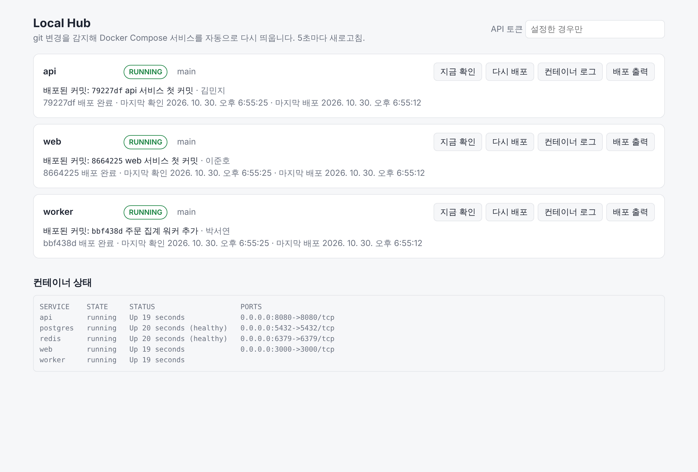
| 버튼 | 하는 일 |
|---|---|
| 지금 확인 | 폴링 주기를 기다리지 않고 바로 새 커밋을 확인합니다. 바뀐 게 있으면 배포합니다. |
| 다시 배포 | 커밋이 그대로여도 다시 빌드·기동합니다. 실패한 커밋을 다시 시도할 때도 씁니다. |
| 컨테이너 로그 | 해당 서비스 컨테이너의 최근 로그 200줄을 카드 아래에 펼칩니다. |
| 배포 출력 | 마지막 배포 때 docker compose가 남긴 빌드·기동 출력을 펼칩니다. 실패 원인을 볼 때 씁니다. |
오른쪽 위 API 토큰 칸은 hub.yml에 api-token을 설정한 경우에만 채웁니다. 입력한 값은 그 브라우저에 기억됩니다.
상태 값
| 상태 | 뜻 |
|---|---|
| PENDING | 아직 한 번도 확인하지 않음 |
| RUNNING | 최신 커밋으로 떠 있음 |
| DEPLOYING | 새 커밋을 빌드·기동하는 중 |
| ROLLED_BACK | 새 커밋 배포에 실패해서 이전 커밋으로 되돌림. 서비스는 이전 버전으로 계속 떠 있음 |
| FAILED | 배포에 실패했는데 되돌릴 이전 커밋이 없음(첫 배포), 되돌린 버전도 실패, 또는 git 명령 자체가 실패 |
새 커밋이 올라왔을 때
아래 두 화면은 api 저장소에 정상 커밋을, web 저장소에 빌드가 깨지는 커밋을 푸시한 뒤의 모습입니다. 따로 누른 버튼은 없고, 폴링으로 감지해 처리했습니다.
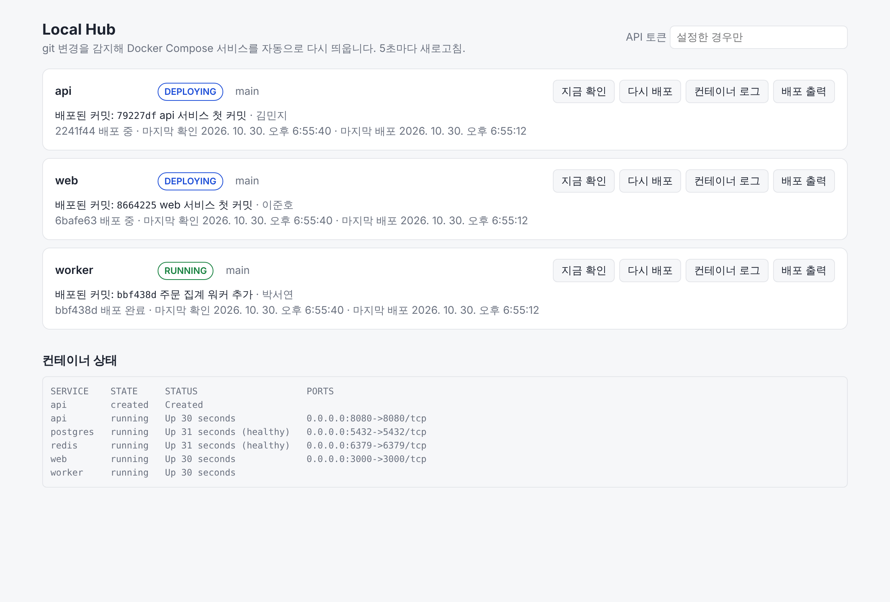
2241f44)와 web(6bafe63)을 빌드하는 중(DEPLOYING)입니다. 배포가 끝날 때까지 기존 컨테이너는 그대로 떠 있습니다.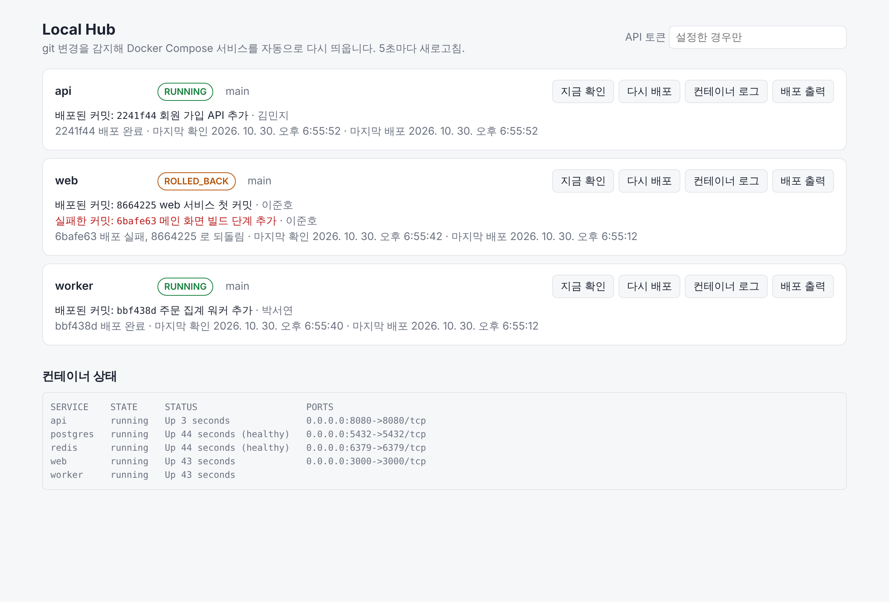
6bafe63을 빨간 글씨로 보여 주면서 이전 커밋 8664225로 되돌려 계속 서비스합니다.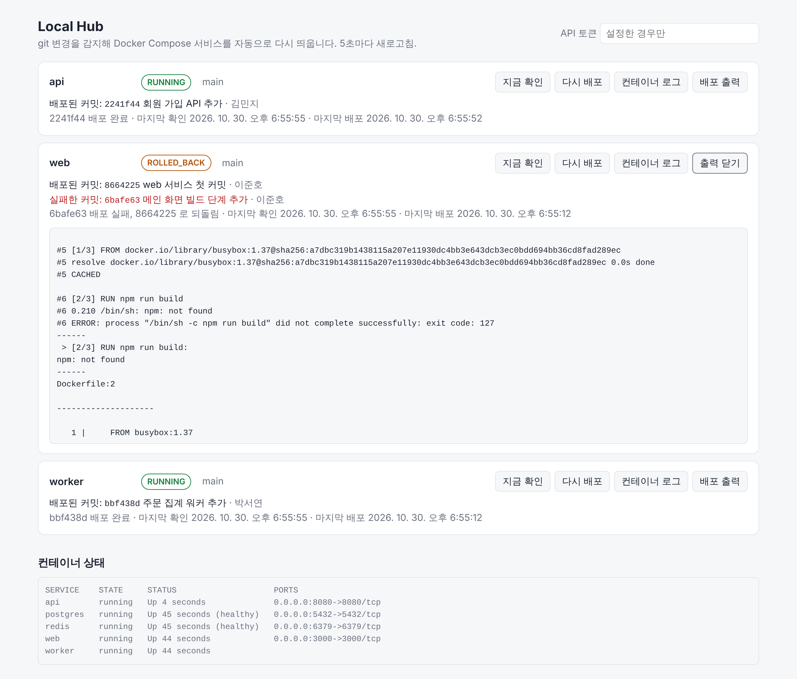
RUN npm run build가 npm: not found로 실패했습니다. 출력은 최근 200줄까지 남습니다.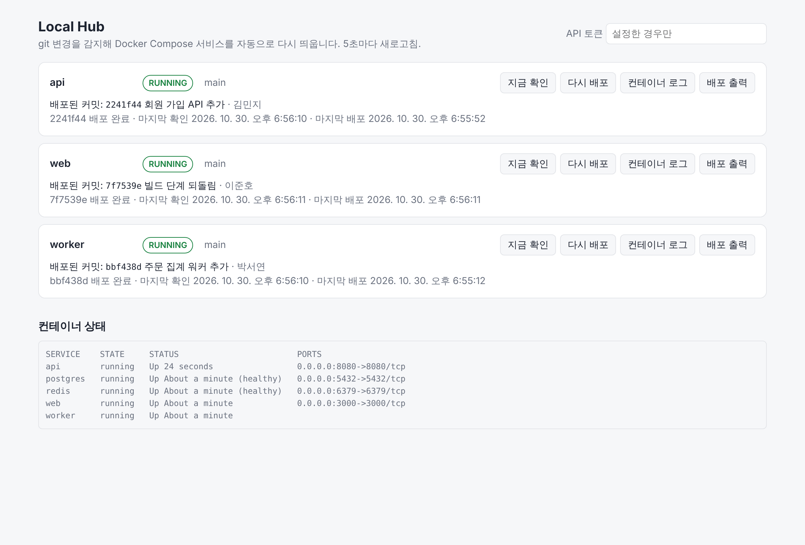
7f7539e를 푸시하자 web이 다시 RUNNING이 되고 실패 표시가 사라졌습니다.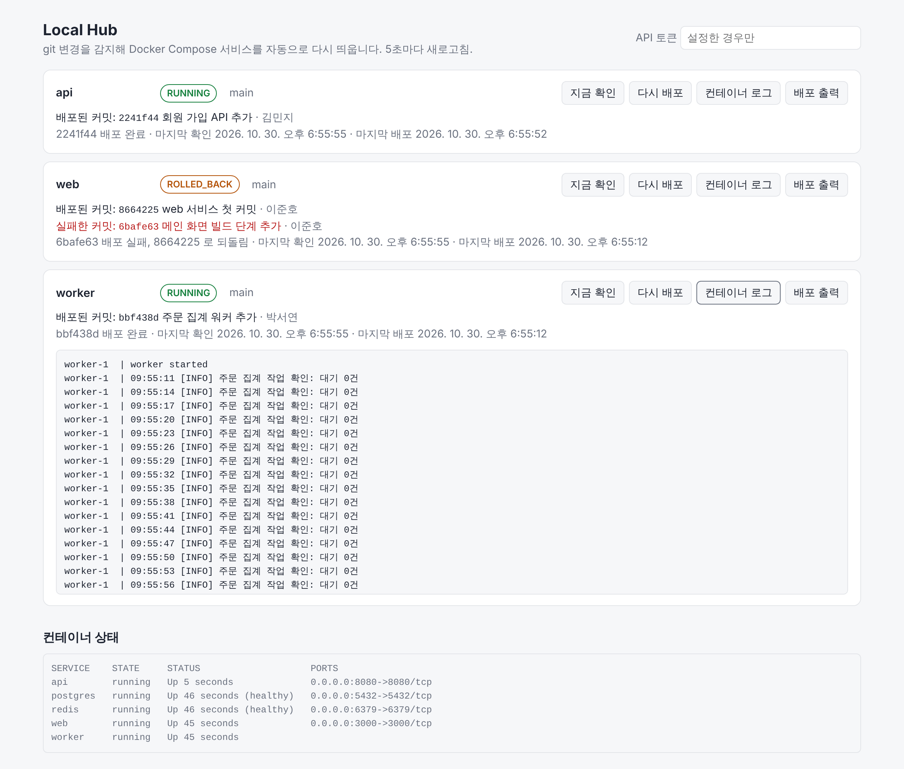
docker compose logs --tail 200 결과입니다. 공용 PC에 접속하지 않고도 팀원 서비스의 로그를 볼 수 있습니다.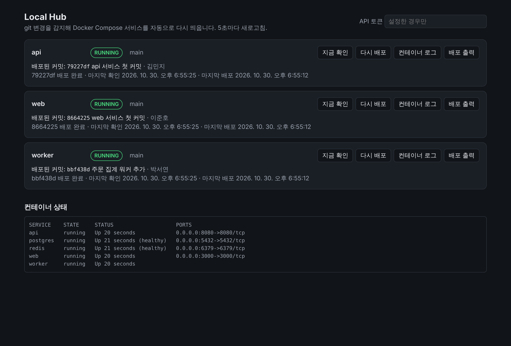
배포 규칙
| 상황 | Local Hub가 하는 일 |
|---|---|
| 처음 시작 | infra-profiles의 공통 서비스를 올리고, 각 저장소를 workspace/에 clone한 뒤 빌드·기동 |
| 새 커밋 발견 | 그 서비스만 docker compose up -d --build --no-deps --wait로 다시 기동 |
| 빌드나 기동 실패 | 이전 커밋으로 되돌려 다시 기동하고 ROLLED_BACK으로 표시 |
| 실패한 커밋이 그대로 | 매 주기마다 다시 시도하지 않음. 새 커밋이 오거나 "다시 배포"를 누르면 재시도 |
| 커밋 변화 없음 | 아무것도 하지 않음 |
--wait를 쓰므로 Compose에healthcheck를 적어 두면 헬스체크까지 통과해야 성공으로 봅니다. 없으면 컨테이너가 떠 있기만 하면 성공입니다.--no-deps라서 한 서비스를 다시 띄워도 DB 같은 다른 컨테이너는 건드리지 않습니다.workspace/는 배포 전용입니다. 배포할 때git reset --hard를 하므로 그 안에서 코드를 직접 고치지 마세요.- 같은 서비스의 배포는 한 번에 하나만 돕니다. 배포 중에 버튼을 다시 눌러도 겹쳐 돌지 않습니다.
실패를 GitHub 이슈로 알리기
켜 두면 배포가 실패하거나 되돌려질 때 그 서비스 저장소에 이슈가 자동으로 올라가고, 커밋 작성자가 멘션됩니다. 다음 배포가 성공하면 댓글을 남기고 이슈를 닫습니다. 대시보드를 보고 있지 않아도 실패를 놓치지 않게 하는 기능입니다.
# hub.yml
hub:
issues:
enabled: true
token: ${HUB_GITHUB_TOKEN:} # 토큰은 파일에 적지 말고 환경 변수로
labels: [local-hub, "type: bug"] # 첫 번째 라벨로 기존 이슈를 찾음
include-output: true # 빌드 출력 끝부분(80줄)을 이슈에 넣을지
services:
- name: web
repo: git@github.com:your-team/web.git
issue-repo: your-team/web # 비우면 repo 주소에서 알아냄export HUB_GITHUB_TOKEN=github_pat_... # Windows: set HUB_GITHUB_TOKEN=...
./hub.sh| 상황 | 이슈에 생기는 일 |
|---|---|
| 배포 실패·되돌림 | [Local Hub] <서비스> 배포 실패 이슈 생성. 실패한 커밋, 상태, 빌드 출력 끝부분, 커밋 작성자 멘션 |
| 이슈가 열린 채로 다른 커밋도 실패 | 같은 이슈에 댓글 추가 (서비스마다 이슈는 하나) |
| 같은 실패가 계속됨 | 아무것도 하지 않음. 매 주기마다 댓글이 쌓이지 않음 |
| 다음 배포 성공 | "정상으로 돌아왔어요" 댓글을 남기고 닫음. Local Hub를 재시작한 뒤의 첫 성공도 포함 |
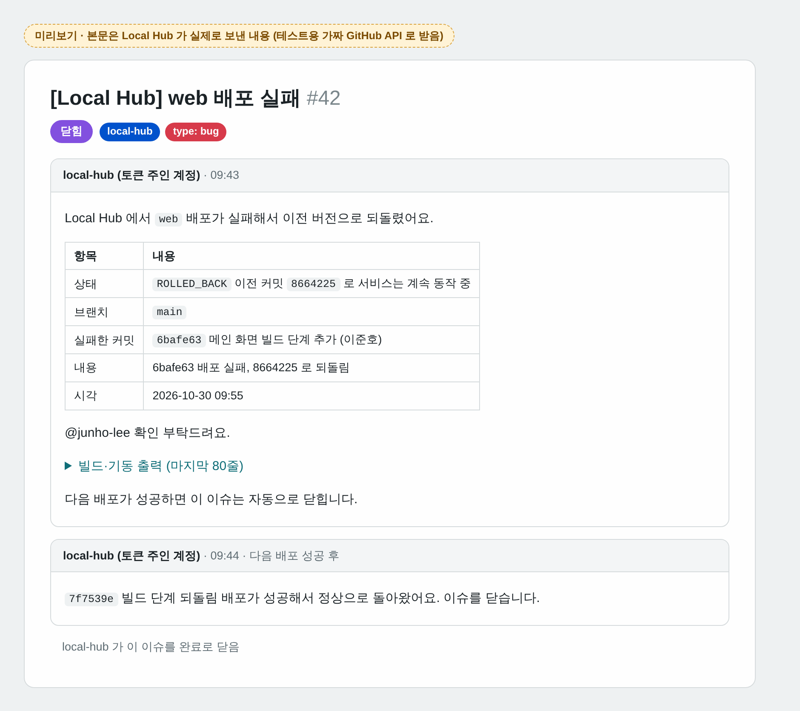
@junho-lee도 예시입니다.- 토큰: GitHub Settings → Developer settings → Fine-grained tokens에서 대상 저장소를 고르고 Issues: Read and write, Contents: Read-only로 만듭니다. Contents 권한은 커밋 작성자의 GitHub 계정을 찾는 데만 씁니다.
- 이슈에
type: bug라벨이 붙으므로 아래 일정 자동화의 마감 알림과 주간 요약에도 그대로 잡힙니다. - 공개 저장소라면 빌드 출력에 비밀 값이 찍히지 않는지 확인하고, 걱정되면
include-output: false로 둡니다. - GitHub에 연결할 수 없어도 배포는 그대로 진행되고, 다음 실패 때 다시 시도합니다.
API와 토큰
| 메서드 | 경로 | 설명 |
|---|---|---|
| GET | /api/services | 전체 서비스 상태 |
| GET | /api/services/{name} | 서비스 하나의 상태 |
| POST | /api/services/{name}/deploy?force=false | 즉시 확인·배포 (비동기, 202 응답). force=true면 커밋이 같아도 다시 빌드 |
| GET | /api/services/{name}/logs?tail=200 | 컨테이너 로그 (최대 2000줄) |
| GET | /api/compose/ps | 공통 서비스를 포함한 컨테이너 목록 |
hub.api-token을 설정하면 POST 요청에 X-Hub-Token 헤더가 필요하고, 틀리면 401을 돌려줍니다. 같은 네트워크에 모르는 사람이 있다면 꼭 설정하세요.
공용 PC는 보통 밖에서 접속할 수 없어 GitHub 웹훅을 직접 받기 어렵습니다. 그래서 기본은 폴링입니다. 더 빨리 반영하고 싶으면 poll-interval을 15s 정도로 줄이거나, 같은 네트워크에서 아래처럼 호출하면 됩니다.
curl -X POST -H "X-Hub-Token: <토큰>" http://<공용PC>:8090/api/services/api/deploy공통 서비스
docker-compose.yml에 프로필로 들어 있고, 필요한 것만 hub.yml의 infra-profiles에 적습니다. 포트와 계정은 local-hub/.env로 바꿀 수 있습니다(.env.example 참고).
| 프로필 | 공용 PC에서 접속 | 컨테이너 안에서 | 기본 계정 |
|---|---|---|---|
postgres | localhost:5432 | postgres:5432 | app / app, DB app |
mysql | localhost:3306 | mysql:3306 | app / app, DB app |
redis | localhost:6379 | redis:6379 | 없음 |
rabbitmq | localhost:5672, 관리 화면 :15672 | rabbitmq:5672 | app / app |
데이터는 이름 있는 볼륨에 저장되므로 컨테이너를 다시 만들어도 남습니다. 팀원 PC에서는 localhost 대신 공용 PC의 IP로 접속합니다.
비공개 저장소
Local Hub는 호스트의 git을 그대로 씁니다. 공용 PC에서 git clone이 되면 Local Hub도 됩니다.
- SSH: 공용 PC에 배포용 SSH 키를 만들고 각 저장소 Settings → Deploy keys에 읽기 전용으로 등록한 뒤
repo: git@github.com:team/api.git - HTTPS:
git config --global credential.helper store후 한 번 clone해서 토큰을 저장
비밀번호를 묻는 상황이 되면 멈춰서 기다리지 않고 실패로 표시합니다.
메모리는 hub.sh 기준 힙 256MB, SerialGC로 돌며 서비스 몇 개를 감시할 때 약 170MB를 씁니다. 무거운 건 Docker 빌드이므로 공용 PC 사양은 팀원 서비스 크기에 맞추면 됩니다.
일정·할 일 자동 관리
GitHub Issues + ActionsGitHub 이슈를 할 일 목록으로 쓰고, Actions가 라벨 정리와 마감 알림, 주간 요약을 대신합니다. Google Sheets와 Apps Script 조합보다 빠르고(이벤트가 오면 수십 초 안에 반영), 코드·PR과 바로 연결되며, 전부 무료입니다.
자동으로 되는 일
| 언제 | 무엇을 | 워크플로 |
|---|---|---|
| 이슈를 만들거나 고칠 때 | 우선순위(priority: P0~P2), 상태(status: todo), 마감(due-soon, overdue) 라벨을 붙임. 마감일 형식이 틀리면 댓글로 안내 | issue-automation.yml |
| 담당자를 지정·해제할 때 | status: in-progress ↔ status: todo | issue-automation.yml |
PR 본문에 closes #12 | 12번 이슈를 status: review로. PR이 머지 없이 닫히면 원래대로 | issue-automation.yml |
| 이슈가 닫힐 때 | 상태·마감 라벨 정리 | issue-automation.yml |
| 매일 오전 9시 (KST) | 마감 라벨 갱신, 새로 마감이 지난 이슈에 담당자 멘션 댓글, Discord/Slack으로 요약 | due-reminders.yml |
| 매주 월요일 오전 9시 (KST) | 지난주 완료, 마감 지남, 기획별 진행률, 담당자별 진행 중 목록을 "주간 요약" 이슈로 만들고 지난 요약은 닫음 | weekly-summary.yml |
| 할 일에 "관련 기획"을 적으면 | 그 기획 이슈의 하위 이슈로 연결 (기획 화면에 진행률 막대가 생김). 기획 번호를 바꾸면 옮김 | issue-automation.yml |
| 기획에 연결된 할 일이 모두 닫히면 | 기획 작성자를 멘션해 "의도대로 됐는지 확인해 주세요" 댓글 | issue-automation.yml |
labels.json이 바뀔 때 | 저장소 라벨 생성·갱신 | labels.yml |
처음 설정 (5분)
.github/를 프로젝트에 복사합니다:scripts/init-project.sh ../my-project --tasksGitHub에 푸시한 뒤 Actions 탭 → 라벨 동기화 → Run workflow를 한 번 누릅니다. 라벨 13개가 만들어집니다.
(선택) 채팅방 알림을 받으려면 Settings → Secrets and variables → Actions → New repository secret에 추가합니다.
- Discord: 채널 설정 → 연동 → 웹후크에서 만든 URL을
DISCORD_WEBHOOK_URL로 - Slack: Incoming Webhook URL을
SLACK_WEBHOOK_URL로
둘 다 넣으면 두 곳 모두로 보냅니다. 없으면 알림 없이 라벨과 이슈만 정리합니다.
- Discord: 채널 설정 → 연동 → 웹후크에서 만든 URL을
바로 확인하고 싶으면 Actions → 마감 알림 → Run workflow를 누릅니다.
이슈 쓰는 법
New issue에서 양식을 고릅니다. 할 일과 버그 양식에는 마감일, 우선순위, 그리고 이 일이 속한 기획을 적는 관련 기획 칸이 있습니다.
| 양식 | 누가 | 칸 | 자동 라벨 |
|---|---|---|---|
| 기획 | 기획자 | 기획 의도(필수), 목표와 성공 기준(필수), 대상 사용자, 주요 내용(필수), 이번에 하지 않는 것, 참고 자료, 마감일, 우선순위(기본 P1) | type: planning |
| 할 일 | 개발자 | 내용(필수), 완료 조건, 관련 기획, 마감일, 우선순위(P0 긴급 · P1 높음 · P2 보통, 기본 P2) | type: task |
| 버그 | 누구나 | 무슨 일이 있었나요, 재현 방법, 관련 기획, 마감일, 우선순위 | type: bug |
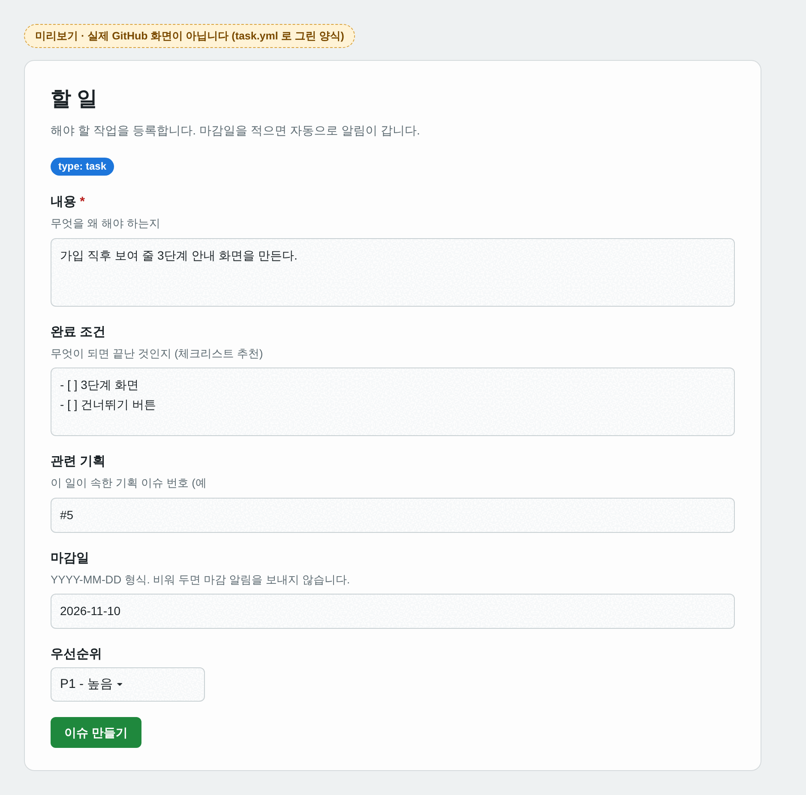
task.yml로 그린 미리보기입니다(실제 GitHub 화면 아님). 관련 기획 칸에 #5를 적으면 5번 기획 아래로 연결됩니다.양식 없이 쓴 이슈도 본문에 이런 줄이 있으면 마감일로 인식합니다. 마감, due로 써도 되고 2026.11.15, 2026/11/5 형식도 됩니다. 마감일을 바꾸려면 본문만 고치면 라벨이 바로 다시 계산됩니다.
마감일: 2026-11-15
기획: #5기획: 줄(또는 관련 기획:)은 기획 번호를 적는 줄로, #5, 5, 이슈 주소 모두 인식합니다.
기획자와 함께 쓰기
기획자는 코드를 몰라도 GitHub 이슈만으로 참여할 수 있습니다. 기획자가 왜 무엇을 만드는지 기획 이슈로 쓰고, 개발자가 그걸 할 일로 나눠 연결하면, 기획 이슈에서 진행률을 보고 끝나면 확인 요청을 받습니다.
기획자: 기획 이슈 작성 (#5) 개발자: 할 일 이슈 작성, "관련 기획" 에 #5
기획 의도 · 목표와 성공 기준 ──▶ #12 온보딩 안내 화면 ┐
주요 내용 · 하지 않는 것 #13 건너뛰기 처리 ├─ #5 아래 하위 이슈로 자동 연결
참고 자료 · 마감일 #14 첫 글쓰기 이동 ┘
▲ │ 모두 닫히면
└──── "@기획자 확인해 주세요" 댓글 ◀────┘기획자가 New issue → 기획 양식으로 씁니다. 기획 의도, 목표와 성공 기준, 주요 내용은 필수이고, 이번에 하지 않는 것과 참고 자료(Figma 링크, 이미지를 끌어다 놓기)를 적으면 개발 일정이 덜 흔들립니다.
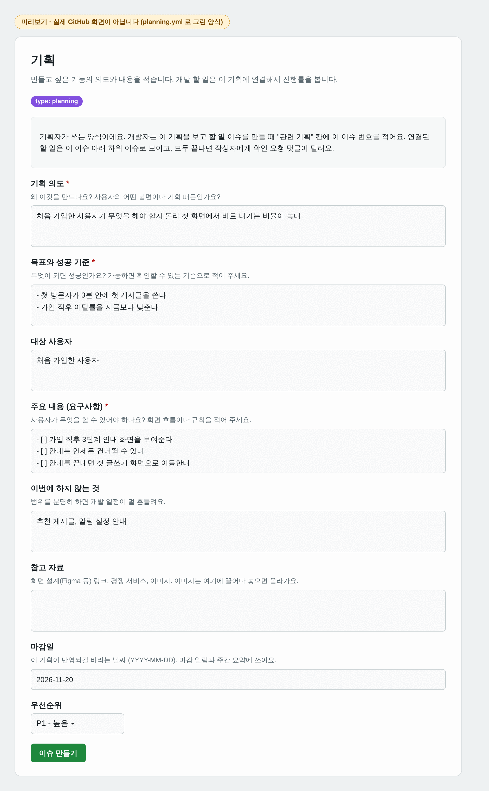
기획 양식을 planning.yml로 그린 미리보기입니다(실제 GitHub 화면 아님). 칸에 적힌 내용은 예시입니다.개발자가 기획을 읽고 일을 나눠 할 일을 만들며, 관련 기획 칸에 기획 번호를 적습니다. 그러면 할 일이 기획의 하위 이슈로 붙고, 기획 이슈에 진행률 막대가 생깁니다. 질문은 기획 이슈 댓글로 주고받으면 기록이 한곳에 모입니다.
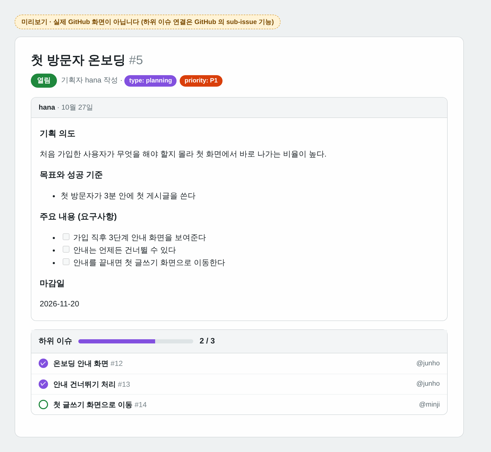
할 일 3개가 연결되고 2개가 끝난 기획 이슈의 미리보기입니다(실제 GitHub 화면 아님). 실제로는 GitHub의 하위 이슈(sub-issue) 영역에 같은 정보가 나옵니다. 연결된 할 일이 모두 닫히면 자동화가 기획 작성자를 멘션해 확인을 요청합니다. 의도대로 됐으면 기획자가 기획 이슈를 닫습니다. "계획 없음"으로 닫은 할 일은 완료로 치지 않습니다.
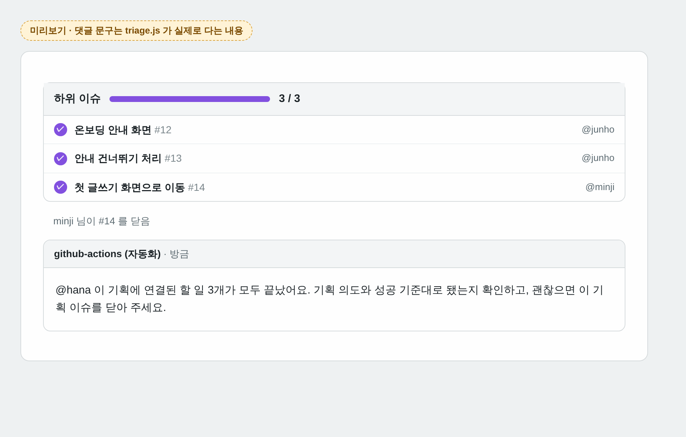
댓글 문구는 triage.js가 실제로 다는 내용이고, 화면은 미리보기입니다.매주 월요일 주간 요약의 기획 진행률에 기획마다
완료/전체가 나옵니다(알림 예시 참고).
하위 이슈 기능을 쓸 수 없는 환경이면 기획 이슈에 "할 일 #12 가 이 기획에 연결됐어요" 댓글로 대신 남깁니다. 관련 기획 번호가 없는 이슈를 가리키면 할 일 이슈에 안내 댓글이 달립니다.
라벨
.github/labels.json에 정의된 라벨입니다. 상태·우선순위·마감 라벨은 그룹마다 하나만 남도록 자동으로 맞춥니다.
due-soon: 마감 2일 이내 (오늘 포함)overdue: 마감일이 지남. 처음 붙을 때 담당자를 멘션하는 댓글이 한 번 달림status: review: 같은 저장소 브랜치에서 올린 PR이 이슈를closes로 연결했을 때type: planning: 기획 양식으로 쓴 이슈. 주간 요약의 담당자별 목록에서는 빠지고 기획 진행률에 나옴local-hub: Local Hub가 자동으로 올린 배포 실패 이슈
알림 예시
아래 두 화면의 본문은 저장소의 알림 스크립트(.github/scripts/lib.js)에 예시 이슈를 넣어 실제로 만든 것입니다. 2026-11-02(월) 기준이고, 이슈와 사람은 예시입니다. 화면 모양은 미리보기이고 실제 GitHub나 채팅 앱 화면은 아닙니다.
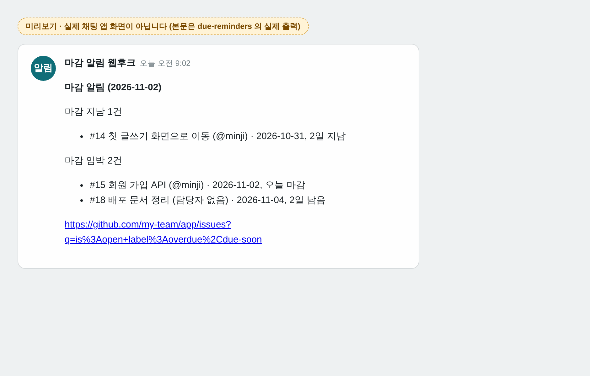
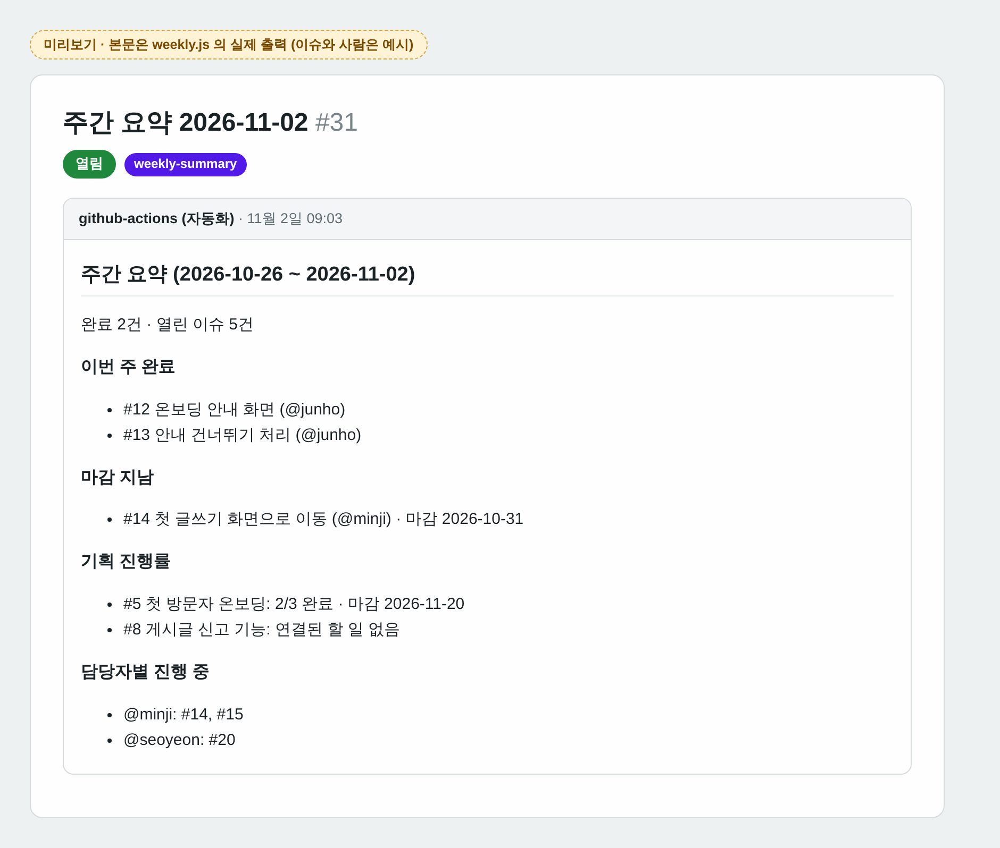
주간 요약은 주간 요약 2026-11-02 같은 제목의 이슈로 만들어지고 weekly-summary 라벨이 붙습니다. "계획 없음(Close as not planned)"으로 닫은 이슈는 완료 목록에서 빠집니다.
칸반 보드로 보기
라벨만으로도 충분하지만 보드로 보고 싶다면 GitHub Projects(무료)를 씁니다.
저장소의 Projects → New project → Board로 프로젝트를 만듭니다.
오른쪽 위 … → Workflows에서 Auto-add to project를 필터
is:issue로 켭니다. Item closed, Pull request merged는 기본으로 켜져 있어 Done으로 옮겨 줍니다.라벨로 묶어 보고 싶으면 보기 설정에서 Group by → Labels를 고릅니다.
무료 플랜의 Auto-add 개수 제한에 걸리면 저장소 변수 PROJECT_URL(프로젝트 주소)과 시크릿 PROJECT_TOKEN(project 권한이 있는 개인 토큰)을 넣으세요. 그러면 issue-automation.yml이 대신 보드에 추가합니다.
비용과 주의점
- 공개 저장소는 Actions가 무료이고 제한이 없습니다. 비공개 저장소는 월 2,000분 무료인데, 이벤트 처리 한 번이 10~20초라 매일 알림과 주간 요약을 합쳐도 한 달 수십 분 수준입니다.
- 예약 실행(cron)은 GitHub 사정으로 몇 분에서 수십 분 늦게 돌 수 있습니다.
- 공개 저장소에 60일 동안 커밋이 없으면 GitHub가 예약 워크플로를 멈춥니다. Actions 탭에서 다시 켜면 됩니다.
- 포크에서 온 PR은 권한이 읽기 전용이라
status: review가 붙지 않습니다.
바꾸고 싶을 때
| 바꿀 것 | 위치 |
|---|---|
| 마감 임박 기준 (2일) | .github/scripts/lib.js의 DUE_SOON_DAYS |
| 알림 시각 | 각 워크플로의 cron. UTC 기준이라 KST에서 9시간을 뺍니다 |
| 라벨 이름·색 | .github/labels.json. 이름을 바꾸면 lib.js의 라벨 상수도 같이 |
프로젝트 템플릿
template/새 프로젝트의 뼈대입니다. init-project.sh --template으로 복사하면 README의 프로젝트 이름이 자동으로 채워집니다.
| 파일 | 내용 |
|---|---|
README.md | 한 줄 소개, 목표, 팀, 기술 스택, 실행 방법, 일정 칸 |
CONTRIBUTING.md | 기획자가 기획 이슈를 쓰고 개발자가 관련 기획을 적어 할 일로 나누는 흐름, 브랜치 이름(feat/12-login-api), Conventional Commits, PR은 Squash and merge, 24시간 안에 첫 리뷰, 제안은 nit: |
.github/pull_request_template.md | 무엇을 했나요(closes #), 어떻게 확인했나요, 리뷰어가 봐 줬으면 하는 부분 |
.github/workflows/ci.yml | pom.xml, Gradle, package.json, requirements.txt/pyproject.toml을 감지해 맞는 빌드·테스트를 돌림. 빌드 파일이 없으면 건너뜀 |
.github/dependabot.yml | GitHub Actions 버전을 매주 확인해 업데이트 PR. 주석을 풀면 maven/gradle/npm/pip 라이브러리도 |
docs/decisions/ | 기술 결정 기록(ADR) 양식과 첫 기록 "결정을 기록한다" |
.gitignore, .gitattributes, .editorconfig, .env.example | 공통 무시 목록, 줄바꿈 통일, 들여쓰기 규칙, 환경 변수 예시 |
복사한 뒤에는 GitHub 저장소 Settings → Branches에서 main 브랜치 보호(PR 필수, CI 통과 필수)를 켜 두면 CONTRIBUTING의 규칙이 실제로 지켜집니다.
init-project.sh
scripts/scripts/init-project.sh <대상 디렉터리> [--template] [--tasks] [--hub] [--force]| 옵션 | 복사하는 것 |
|---|---|
--template | 프로젝트 뼈대 (template/ 폴더 내용) |
--tasks | 일정·할 일 자동화 (이슈 양식, 라벨, 워크플로, 스크립트) |
--hub | Local Hub (local-hub/) |
| (없음) | 위 세 가지 모두 |
--force | 같은 이름의 파일이 있어도 덮어씀. 기본은 건너뜀 |
- 실행 중에 생기는 파일(
hub.yml,.env,workspace/, 빌드 결과)은 복사하지 않고.gitignore에 추가합니다. - 대상 폴더가 git 저장소가 아니면
git init(main 브랜치)까지 합니다. - Windows에서는 Git Bash로 실행합니다.
$ SideProjectManager/scripts/init-project.sh ./my-project
프로젝트 뼈대 복사
일정·할 일 자동화 복사
Local Hub 복사
git 저장소를 새로 만들었습니다 (main 브랜치)
완료: 63개 복사, 0개 건너뜀 → ./my-project
다음 할 일
- README.md 의 소개·팀·기술 스택 채우기
- GitHub 저장소 Settings → Branches 에서 main 브랜치 보호 (PR 필수, CI 통과 필수) 켜기
- 푸시한 뒤 GitHub Actions 탭에서 '라벨 동기화' 워크플로를 한 번 실행
- (선택) Settings → Secrets 에 DISCORD_WEBHOOK_URL 또는 SLACK_WEBHOOK_URL 추가
- local-hub/hub.sh 실행 후 hub.yml 에 감시할 저장소 등록my-project/
├── README.md 소개·팀·기술 스택·실행 방법·일정 (프로젝트 이름 자동 입력)
├── CONTRIBUTING.md 기획→할 일 흐름, 브랜치·커밋·PR·리뷰 규칙
├── docs/decisions/ 기술 결정 기록 (양식 포함)
├── .github/
│ ├── workflows/ci.yml 언어를 감지해 빌드·테스트
│ ├── workflows/... 이슈 정리, 마감 알림, 주간 요약, 라벨 동기화
│ ├── scripts/ 자동화 로직 (JavaScript)
│ ├── ISSUE_TEMPLATE/ 기획·할 일·버그 양식
│ ├── labels.json
│ ├── pull_request_template.md
│ └── dependabot.yml
├── local-hub/ 공용 PC 통합 서버
└── .gitignore .gitattributes .editorconfig .env.example고치고 테스트하기
node --test ".github/scripts/*.test.js" # 일정 자동화 스크립트 (27개 테스트)
(cd local-hub/app && ./mvnw test) # Local Hub 단위 테스트 (18개)
(cd local-hub/app && ./mvnw package) # target/local-hub.jar워크플로는 actions/github-script로 .github/scripts/의 파일을 불러오기만 하므로, 로직은 거기서 고치고 위 테스트로 확인합니다. PR을 올리면 CI가 두 테스트를 모두 돌립니다.
스크린샷에 대해
이 가이드의 화면은 두 종류입니다.
| 종류 | 화면 | 어떻게 만들었나 |
|---|---|---|
| 실제 화면 | Local Hub 대시보드 7장 | Local Hub를 실제로 띄워 찍었습니다. 예시 저장소 세 개(api, web, worker)와 Postgres, Redis를 올리고 정상 커밋, 빌드가 깨지는 커밋, 고친 커밋을 차례로 푸시했습니다. 커밋 작성자 이름은 예시입니다. |
| 미리보기 (실제 GitHub 화면 아님) | 기획·할 일 양식, 기획 진행률, 기획 완료 댓글, 배포 실패 이슈, 주간 요약, 채팅 알림 | 워크플로가 실제 저장소에서 돌아야 찍을 수 있어 직접 그렸습니다. 양식은 저장소의 YAML 파일에서, 본문과 댓글 문구는 실제 스크립트 출력에서 가져왔습니다. 배포 실패 이슈는 Local Hub가 테스트용 가짜 GitHub API로 실제로 보낸 내용입니다. 이미지 위쪽 노란 표시로 구분됩니다. |
PR #1과 #2를 머지한 뒤 실제 저장소에서 기획 이슈를 하나 만들어 보면 GitHub의 실제 화면으로 바꿔 넣을 수 있습니다.